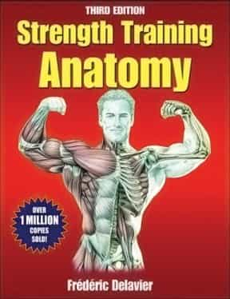

< < < Back
All Girls Like Muscular Guys – Return Of Kings
I’ve never been much of meathead gym-rat. I played sports in high school, including track and field, but was fed the line that weight lifting would “bulk me up” and “slow me down.” I never really had much more than a slender, athletic build—muscular, but thin—a development that I attribute to several subsequent years of running distance to stay in shape. There was a time where I’d go on 10- or 12-mile runs like nothing, getting even thinner in the process.
My fitness decisions were based on a series of embarrassingly inaccurate myths, including the notion that endurance training was best for my “overall health” and— more importantly— that most girls “didn’t really like muscular guys” anyway. In more recent years, I’d gradually degenerated into a skinny-fat build borne from a combination of boredom and laziness—not horribly out-of-shape, but with a weak-looking question-mark posture, a slightly protruding man-pooch, and nascent man boobs.
The whole thing came to a head, hilariously, when I was examining a sex video I’d made with an ex-girlfriend, and I saw what my body looked like from a distance. Here I was, filming this for posterity, and I couldn’t bear to look at myself. Something needed to change. I went back to what I knew. I started jogging, doing light resistance training with an emphasis on reps over weight, and quickly noticed a difference. Within, I’d say, two months, I looked noticeably thinner again. I was back at zero.
This time around, though, I had a theory I wanted to test out. For years, people—including chicks—had been beating that same drum that only a small subset of girls liked muscular dudes. Years earlier, I’d abandoned taking advice from most people about girls—especially from girls—realizing it was irretrievably stupid. So why would this be accurate? I basically hadn’t gone back and revised that part of my knowledge base to new realities.
So I decided to run an experiment on myself. “Let’s see what happens if I get a little ripped.” I picked up a series of weightlifting books, revised my workout routine with a focus on strength training, bought some weightlifting gloves, and started hitting the gym on the regular. One of the bread-and-butter components of my Workout Routine 1.0 had been a home workout. I’d do a series of body-weight exercises, with an emphasis on flexibility and endurance. I updated that process to focus on muscle-gain. I made a concerted effort to eat at home more often, eating protein and vegetables at better intervals. I started taking vitamins, including zinc and magnesium. I played hype songs on loop while doing push-ups and dips like a prison inmate.

It wasn’t long before I was in a zone. I was lifting at the gym three or four days a week, and supplementing that with a day or two of home workout. The differences in my physique and behavior were noticeable. Previously fitted shirts became snug around my arms and chest. My posture improved, making me look longer and sturdier. I threw out the trash shirtless.
Girls’ reactions were a lot more interesting. I’d catch them staring—sometimes several times during a conversation—at my arms and chest. Girls’ hands would linger on certain parts of my body when they would do one of those you’re-so-funny pawings. The nerdiest, most bookish girls, the kind who like sci-fi and talk with a slight lisp—who most people never-in-a-million-years would imagine cared about such things—would oooh and ahhh when I’d tell them to feel my biceps and half-jokingly explain that I was “in the middle of getting ripped.” I had unwittingly leveled-up.
Here’s the thing: if you were to see me in the street right now, you’d never call me buff. By any serious measure, I’m just getting started. As 2013 gets underway, my “resolution” is to cement these gains and push them to the next level. Interestingly, at the same time that my humble progress has gotten me better attention from better girls, it has become less and less about them. Working out has become my thing.
But, if you pick up anything from my little experiment, it’s this: every girl—regardless of what she, or anyone else, says—likes muscles on a guy. Don’t believe otherwise.
Read More: The Power of Shame


{kind=link}